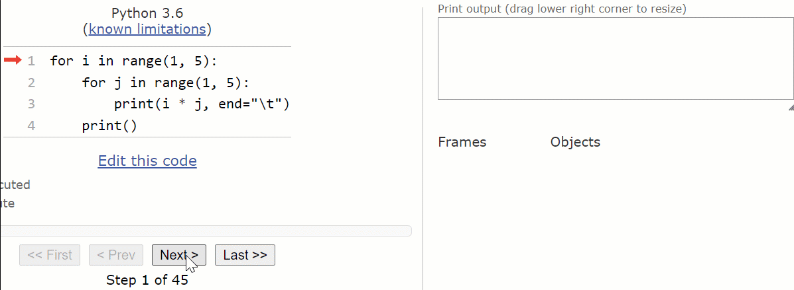

5. For Loop#
In this notebook, we cover the following subjects:
A Simple Loop;
Using lists with for loops
Iterable object indexing
range() function
Combining range() with len()
Nested Loops.
# To enable type hints for lists, we need to import the following:
from typing import List
5.1. A Simple Loop#
In Python, a for loop lets you iterate over a sequence, like a list, tuple, dictionary, set, or string. Use for loops when you know the number of iterations ahead of time, like when you need to repeat a process a set number of times or go through specific items in a list. The syntax looks like this:
for variable in object:
# Code
With a for loop, we can, for instance, print each letter of a string.
for letter in "animal":
print(letter)
a
n
i
m
a
l
In the example code above, the variable letter acts as the iteration variable (or loop variable). Each time the loop runs, the next character in the string is assigned to letter. You can freely choose the name of the loop variable - use this to make your code clearer. The loop continues until no characters are left.
You don’t need to define the variable in the for statement beforehand, and there’s no need for type hints. For readability, it’s best to use a clear and descriptive variable name.
Note
You can’t use the variable from the for loop outside of it; its scope is exclusively within the for loop.
Now that we have seen more than enough lists, let’s iterate trough a few. Shall we?
iterable_string: str = 'Thisismyfirsttimeiteratinganditissomuchfun!'
for letter in iterable_string:
print(letter)
T
h
i
s
i
s
m
y
f
i
r
s
t
t
i
m
e
i
t
e
r
a
t
i
n
g
a
n
d
i
t
i
s
s
o
m
u
c
h
f
u
n
!
Wow, long print huh? Let’s try something else:
# Will this also work?
for digit in 12345:
print(digit)
---------------------------------------------------------------------------
TypeError Traceback (most recent call last)
Cell In[4], line 3
1 # Will this also work?
----> 3 for digit in 12345:
4 print(digit)
TypeError: 'int' object is not iterable
Why do we get the above error message?
We get the error message due to the fact that intigers are non-terable object. Takeaway from here, you can only loop over iterable data types.
Can you think of any other non-iterable data type (from the ones we already discussed)?
Good job! I knew that you will say float.
OK, enough of strings and intigers for now, let’s check another concept that will utilize for loops better.
5.1.1. Using lists with for loops#
In order for you to clearly understand the following examples in this chapter, we must first talk a bit about lists.
We have already talked about a few data types in Python, such as, intigers, strings, floats or boolean values. Lists are another usefull data type that you must put in your tool set in order to master programming in Python.
So what is a list?
A list in Python is like a container that holds multiple items in a specific order.
These items can be numbers, words (strings), or anything else (other lists, booleans, dictionaries etc.).
You can think of a list like a shopping list, where each item is stored in a specific place.
Bellow you can see multiple examples of lists:
my_number_list: List[int] = [1, 2, 3, 4, 5]
my_string_list: List[str] = ['panda', 'parrot', 'penguin', 'panther', 'platypus']
my_boolean_list: List[bool] = [True, False, False, True]
my_list_of_lists: List[List[int]] = [[1, 2, 3, 4, 5], [3, 4, 5], [1, 2, 3]]
my_mixed_list: List[any] = ['polecat', True, 73, ['pecarry', '?', 3], False]
You probably noticed that we can store literally anything in a list. Fun, right?

Note
The typehint for a list is:
variable: List[data type of values in the list]
It is possible to store values in a list which has different data types. In that case, just use the any keyword.
5.1.2. Iterable object indexing#
You might be wondering why were the words: specific order bold in the above text.
The reason for that highlight is that lists elements (and any other iterables) can be indexed based on their index. You are probably very confused right now about what we mean by index, but do not worry, everything will make sense in a few lines.

Indexing in Python refers to accessing individual elements of a list (or other sequences like strings) by their position. Each item in a list has an index, which is like an address that tells you where that item is in the list. Whenever you want to access an element in a sequence, you have two options. You can access an element starting from the front or starting by the end. What do we mean by that? Consider the bellow 2 options:
Index starts at 0: The first item in the list (or any other sequence) is at index 0, the second item is at index 1, and so on.
my_list: List[str] = ['apple', 'banana', 'cherry']
print(my_list[0]) # This prints 'apple'
print(my_list[1]) # This prints 'banana'
print(my_list[2]) # This prints 'cherry'
Negative indexing: You can also use negative numbers to start counting from the end of the list. -1 refers to the last item, -2 to the second-to-last, and so on.
print(my_list[-1]) # This prints 'cherry'
print(my_list[-2]) # This prints 'banana'
To put it bluntly, indexing is just how you grab a specific item from a sequence using its position! Now, it is high time that we iterate over a list.
greta_gerwig_films: List[str] = ["Lady Bird", "Little Women", "Barbie"]
for film in greta_gerwig_films:
print(film)
So now we can loop over many things, which is great, but you might feel like there is something missing. If that is the case, then you are absolutely right! Let’s cover a few useful functions that you can neatly combine with for loops.
5.1.3. The range() Function#
If you want to iterate through a range of numbers, you can use the range() function. The syntax of this function is as follows:
range(start, stop, step)
Remember, we can use the help function to understand the usage of range().
help(range)
From the documentation, we can interpret the parameters as follows:
start (optional): This is the number at which the sequence starts and is inclusive, the default is 0.
stop (required): This is the number at which the sequence ends and is exclusive.
step (optional): This is the stepsize between each number, with default 1.
Let’s look at a few examples to demonstrate the use of range.
for i in range (1,6):
print(f"Printing numbers from 1 to 5: {i}")
print('----------------') # aesthetic print
for i in range(1, 11, 2):
print(f"Odd number: {i}")
print('----------------') # aesthetic print
# What happens when the stepsize is negative?
for i in range(3,0,-1):
print(f'{i}...')
print('Take-off!')
Note
The break and continue statements also works with for loops, not solely with while loops.
5.1.4. Combining range() with len()#
Combining range() with len() is useful when you want to loop through a list using the index of each element.
Instead of looping directly over the items in the list, you’re looping over the numbers that represent the positions of the items (their indices).
This is helpful when you need to know where each item is located or when you want to modify items in the list.
Let’s see an example.
my_list: List[str] = ['apple', 'banana', 'cherry']
for i in range(1, len(my_list)):
print(my_list[i])
So what is happening there?
As you can see, the above code only prints banana and cherry and skipps apple. Let’s try to answer the bellow question:
Why is apple skipped?
If you paid close attention, you probably noticed that we use range(1, len(my_list)) in the code above. Meaning, we start printing from index 1 (skipping index 0 which stores the item apple) which is banana, and keep iterating over the list.
Great, now we saw how to loop over items and how to loop over indices separately.
I say let’s try combining looping over items and indices at the same time. Yes, this might sound surprising but it is possible!.
To do so, we need to discuss a more advanced function, called enumerate.
5.1.5. The enumerate() Function#
enumerate() is another built-in Python function that makes it easier to loop through a sequence and get both the index and the item at the same time.
Normally, when you use a for loop, you just get the items in the list:
my_list: List[str] = ['apple', 'banana', 'cherry']
for item in my_list:
print(item)
Output:
apple
banana
cherry
But what if you also want to know the index (position) of each item? This is where enumerate() comes in. It gives you both the index and the item, so you don’t need to manage counting manually.
for index, item in enumerate(my_list):
print(index, item)
Output:
0 apple
1 banana
2 cherry
Let’s try it for ourselves.
for index, letter in enumerate("house"):
print(f"At index {index}, we have the letter: {letter}.")
5.2. Nested Loops#
As you might have guessed, loops can be nested within each other. This means that for each iteration in the outer loop, the inner loop is fully executed. As an example, if the outer loop consists of 3 iterations and the inner loop of 4 iterations, the total number of iterations in the nested loop is 3 x 4 = 12.
Let’s see an interactive example:
Let’s take a look at the following code, helping to check for poachers in different savannah areas. There are three zones in each of the ten areas. If an area contains poachers, each of its three zones will be cleared.
no_of_areas = 10
no_of_zones = 3
areas_with_poachers = [3, 6, 9]
for area in range(1, no_of_areas + 1):
if area in areas_with_poachers:
for zone in range(1, no_of_zones + 1):
print(f"Zone {zone} of Area {area} has been cleared of poachers.")
else:
print(f"No poachers in area {area}.")
Note
The inner loop only gets executed for certain iterations of the outer loop here, which we control through an if statement.
5.3. Exercises#
Let’s practice! Mind that each exercise is designed with multiple levels to help you progressively build your skills. Level 1 is the foundational level, designed to be straightforward so that everyone can successfully complete it. In Level 2, we step it up a notch, expecting you to use more complex concepts or combine them in new ways. Finally, in Level 3, we get closest to exam level questions, but we may use some concepts that are not covered in this notebook. However, in programming, you often encounter situations where you’re unsure how to proceed. Fortunately, you can often solve these problems by starting to work on them and figuring things out as you go. Practicing this skill is extremely helpful, so we highly recommend completing these exercises.
For each of the exercises, make sure to add a docstring and type hints, and do not import any libraries unless specified otherwise.
5.3.1. Exercise 1#
Let’s practice with loops, starting off with a fun and simple exercise.
Level 1: Classic exercises with loops often involve counting, something we will do now as well. Your task is to write a simple program (not creating a function) that asks the user to enter a string and counts the number of vowels (a, e, i, o, u).
Use a counter and a for loop to perform the counting. Make sure your program is case-insensitive, counting both lower and upper case vowels. Once the loop has terminated, print the result.
Example input:
user_input: str = "Bye World!"
Example output:
"The string contains 2 vowels."
user_input: str = input("Enter a string: ")
# TODO.
That was a great warm-up; now let’s really start sweating!
Level 2: Inspired by the previous exercise, you’re tasked to write a function called filter_and_count_vowels(). The function removes all the vowels (a, e, i, o, u) from a given string and returns the new string as well as the number of removed vowels.
The function should be case-insensitive, meaning it should remove both lowercase and uppercase vowels. Use a for loop to iterate through the string and build a new string without the vowels. Make sure to use the return statement. Additionally, print the result outside of the function.
Define the input string at the top of your code, rather than taking it as user input, and then pass this string as an argument to your function.
Example input: you pass this in a function call.
input_str: str = "Welcome to Amsterdam!"
Example output:
Filtered string: "Wlcme t mstrdm!"
Number of removed: 7
# TODO.
Level 3: Time to make this more interesting! You’re tasked with writing a function called replace_vowels_with_symbols(), but there’s a twist!
Instead of replacing all vowels with a single symbol, you’ll cycle through a list of symbols to make it more dynamic.
Here’s what the function needs to do:
Replace vowels (a, e, i, o, u) with symbols from a given list of symbols (like [‘*’, ‘@’, ‘#’, ‘$’, ‘%’]). Each vowel will be replaced by the next symbol in the list, looping back to the start of the list if necessary.
Return:
The modified string (with vowels replaced by the symbols).
The list of original indices where the vowels were replaced.
The total count of replaced vowels.
The function should be case-insensitive. Cycle through the symbols using their index in the list.
Hints:
If the symbol list runs out, start again from the beginning.
Make sure to print the final results outside of the function!
Think of which built in function would allow you to access multiple things at the same time ;)
Example input:
input_str = "Fun with vowels!"
symbols = ['!', '?', '#', '&', '~']
Example output:
Modified string: "F?n w!th v#w~ls!"
List of vowel indices: [1, 5, 9, 11, 14]
Number of replaced vowels: 5
symbols: List[str] = ['!', '?', '#', '&', '~']
# TODO.
5.3.2. Exercise 2#
Let’s continue with something more challenging, yet creative. In Python, we can ‘draw’ shapes made of special characters, such as brackets, dashes, asterisks or dots. For example, we can print a diamond using asterisks:
*
***
*****
***
*
Level 1: Now, write a function called diamond() that takes an uneven integer input from the user for the size of the diamond’s diagonals, which represents both its height and width (as they are equal in this case). The program should then print a diamond shape made of * characters, based on the size parameter. Note that your function should print the diamond directly and not return any values.
Requirements:
Use
forloops for this exercise;If the input is 0, uneven or negative, the code should print
"Invalid Input".
Hint:
Use two separate
forloops: one for the upper part of the diamond and one for the lower part. Include the middle line in only one of the loops.
Example input: you pass this in a function call.
user_input: int = 5
Example output:
*
***
*****
***
*
# TODO.
Level 2: Now, let’s use the diamond() function for a more complex task involving lists. Write a Python program that takes a list of people’s names as input instead of a specified size. For each name, print a diamond based on the length of the name, along with a nice message. Again, note that your function should print the diamond directly and not return any values.
Requirements:
For each person, the size of the diamond’s diagonal should be the same as the number of characters in their name;
If the length of a name is even, you have to substract 1 before creating the diamond;
The list should be defined at the top of your code, not taken as user input.
Hint:
Use two separate
forloops: one for the upper part of the diamond and one for the lower part. Include the middle line in only one of the loops.
Example input: you pass this in a function call.
people: List[str] = ["Adele", "Bilbo Baggins"]
Example output:
Adele's diamond:
*
***
*****
***
*
Bilbo Baggins' diamond:
*
***
*****
*******
*********
***********
*********
*******
*****
***
*
# TODO.
We’re on a roll! Let’s get even more creative with the diamond function.
Level 3: Write a program that makes the diamond() function customizable with different characters for drawing the diamond. The user can select two characters: one for the main body of the diamond and another for the outline. The outline character is an optional parameter; if this character is not specified, the program should default to using spaces.
The function takes the following inputs, all defined at the top of your code, not taken as user input:
A list of strings containing people’s names (required, parameter name:
names);A character for the diamond’s body (required, parameter name:
main_char);A character for the diamond’s outline (optional, parameter name:
outline_char).
Requirements:
For each person, the size of the diamond’s diagonal should be the same as the number of characters in their name;
If the length of a name is even, you have to substract 1 before creating the diamond;
The main character fills the body of the diamond, while the outline is drawn using the outline character;
If the passed argument to
main_charoroutline_charis not a single character, print an error message:"Invalid Character".
Hint:
Use two separate
forloops: one for the upper part of the diamond and one for the lower part. Include the middle line in only one of the loops.
Instead of printing, as done in Level 1 and 2, the function should return a list of strings, where each string in the list represents a single line of a diamond, and the list includes all lines for each person. The return format should clearly indicate the name corresponding to each diamond shape.
For this exercise, ensure you use for loops not only to construct the diamond within the function but also to print each line of the result outside the function. This means after receiving the returned list, you should use a for loop to print each line of the diamonds.
Example input: you pass these arguments to the parameters in a function call.
people: List[str] = ["Drake", "Beyoncé"]
main_character: str = '#'
outline_character: str = '@'
Example of return value:
[
"Drake's diamond:",
" @ ",
" @#@ ",
"@###@",
" @#@ ",
" @ ",
" ",
"Beyoncé's diamond:",
" @ ",
" @#@ ",
" @###@ ",
"@#####@",
" @###@ ",
" @#@ ",
" @ "
]
Example of printed output:
Drake's diamond (5 characters):
@
@#@
@###@
@#@
@
Beyoncé's diamond (7 characters):
@
@#@
@###@
@#####@
@###@
@#@
@
# TODO.
5.3.3. Exercise 3#
Let’s dive into some TikTok-inspired coding challenges.
Level 1: TikTok videos often have tons of comments! In this exercise, your goal is to write a program that counts how many of the comments contain a specific word.
Task:
Write a function called count_keyword_comments().
The function takes a list of comments (strings) and a keyword (string) as input.
It loops through the list of comments and counts how many times the keyword appears.
The function should be case-insensitive, meaning “Dance” and “dance” count the same.
Example input:
comments: List[str] = ["I love this dance!", "Such a great dance!", "That was awesome", "I can't stop dancing"]
keyword: str = "dance"
Example output:
The keyword "dance" appeared in 3 comments.
# TODO.
Level 2: Ever wonder how TikTokers keep track of their most popular videos? Now, you will write a program that tracks the likes on different TikTok videos and finds the most liked video!
Task:
Write a function called most_liked_video().
The function should take two inputs:
A list of TikTok video titles.
A list of likes corresponding to each video (same order).
Return the title of the most liked video and the number of likes it has.
Example input:
videos: List[str] = ["Dance Moves", "Funny Cat", "Lip Sync Battle", "Vlog Day 1"]
likes: List[int] = [500, 1200, 800, 750]
Example output:
The most liked video is "Funny Cat" with 1200 likes.
# TODO.
Level 3: TikTok trends spread like wildfire! Your challenge is to simulate a “trend chain” where each TikTok video has a follower count, and when a video trends, the follower count doubles until it stops trending.
Task:
Write a function called trend_chain_simulation().
The function should take one input:
A list of videos and their initial follower counts (use a list of lists where each sub-list contains the video name and its follower count).
Use a while loop to simulate the trend for each video:
For each video, ask the user (via input) whether the video is “still trending” (Yes or No).
If “Yes”, double the follower count.
If “No”, stop doubling and move to the next video.
After processing all videos, print out the final follower counts for each video.
Example input:
videos: List[List[any]] = [["Dance Tutorial", 1000], ["Prank Gone Wrong", 500], ["DIY Crafts", 750]]
Example conversation:
Is “Dance Tutorial” still trending? - Yes
Is “Dance Tutorial” still trending? - No
Is “Prank Gone Wrong” still trending? - Yes
Is “Prank Gone Wrong” still trending? - Yes
Is “Prank Gone Wrong” still trending? - No
Is “DIY Crafts” still trending? - No
Example output:
Final follower counts:
"Dance Tutorial" now has 2000 followers.
"Prank Gone Wrong" now has 2000 followers.
"DIY Crafts" now has 750 followers.
# TODO.
Material for the VU Amsterdam course “Introduction to Python Programming” for BSc Artificial Intelligence students. These notebooks are created using the following sources:
Learning Python by Doing: This book, developed by teachers of TU/e Eindhoven and VU Amsterdam, is the main source for the course materials. Code snippets or text explanations from the book may be used in the notebooks, sometimes with slight adjustments.